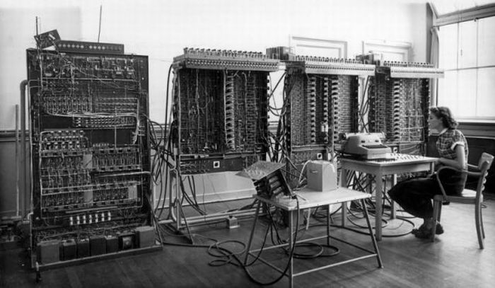

ЭВМ (электронно-вычислительная машина) (или компьютер) — это аппаратно-программное вычислительное устройство, реализованное на электронных компонентах и выполняющее заданные программой действия.
Термин ЭВМ сегодня практически не применяется, кроме как в историческом смысле.
